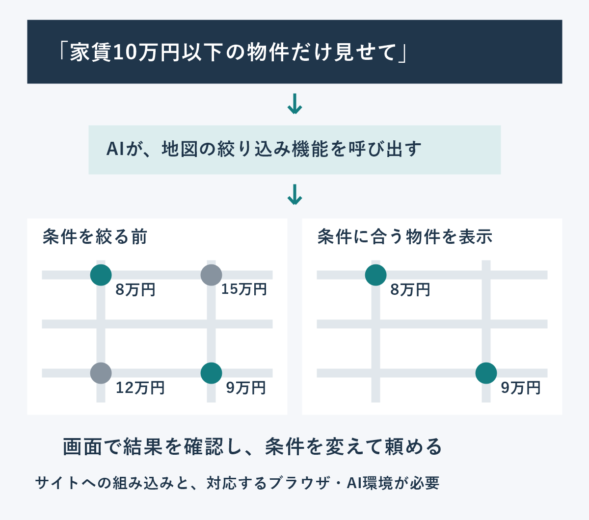
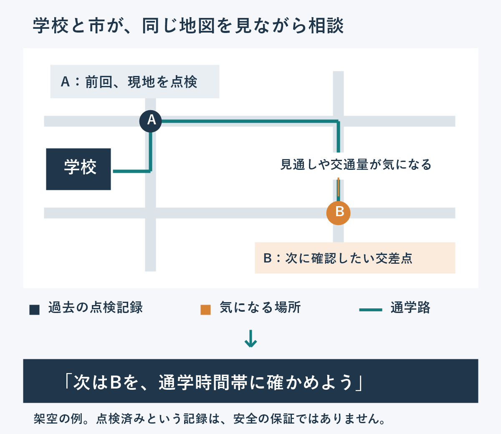

AIに地図を操作してもらう仕組みは、今週も広がっています。もう一つ気になったのが、地図データを保存する形式「GeoParquet」の2.0公開です。DuckDBやGeoPandasなどで対応が進み、道具をまたいでデータを使うための土台も整ってきました。
例えば、DuckDBで店舗データを絞り込み、GeoPandasで周辺地域との関係を分析する。同じファイルで位置や座標系も受け渡せれば、道具を変えるたびにデータを変換する手間を減らせます。対応範囲にはまだ違いがありますが、使いたい道具を組み合わせやすくなる方向は、普段DuckDBを使う立場としても嬉しく思います。
本誌では、地図・位置情報・POIなどの地理空間データを、機械学習やデータサイエンスの手法で分析・活用する領域をGeoAIと呼びます
Mapboxが11月19日、Web地図とブラウザのAIエージェントをつなぐ「WebMCP」プラグインを公開プレビューとして提供しました。条件に合う物件だけを表示したり、気になる場所を強調したりする操作をAIに任せられます。
サイトの開発者による組み込みと、対応するブラウザ・AI環境が必要です。あらゆる地図をそのまま会話で操作できる機能ではなく、Mapboxの利用条件も適用されます。

公式発表を基にした概念図。物件と地図は架空で、実際の製品画面ではありません。サイトへの組み込みと対応環境が必要です。
店舗の位置や建物の形を、売上などの表データと一緒に保存できるGeoParquetが、11月24日に2.0を正式公開しました。土台のParquet形式に備わった地理空間型を採用し、対応する分析ツールが位置・形状の列を直接認識できるようにしています。対象地域と関係のないデータの読み取りを省く仕組みも利用できます。
DuckDBやGeoPandasなどで対応が進んでいますが、読み書きできる範囲には違いがあります。古いツールを含めて広く配布する場合は、引き続き1.1が推奨されています。
国土交通省が11月25日、雨水を排水しきれず浸水が想定される区域を追加しました。地価や都市計画などと重ねて確認でき、住まいや店舗候補地を調べる材料になります。システムへ組み込むためのAPI提供も始まりました。
ただし、公式の出典表によると、画面の地図とAPIでは原典・整備時期が異なります。色がない場所を「浸水しない」と判断せず、収録範囲や自治体の案内も確認してください。
「CARTO Air-gapped」は、地図分析に加え、AIモデルや認証も組織内に置いて運用する構成です。機密性の高いデータを扱う企業・機関など、一部顧客への個別提供となります。
地図データを表示・分析するGISアプリ「GeoLibre」が、スマホ向けのタッチ操作やGPS位置での地点登録、ブラウザ内での経路・統計解析を拡充しました。3.10.0のデスクトップ起動問題などを直した3.10.1も公開されています。
不動産管理や訪問業務向けに、建物のピンを開いて部屋ごとの記録・状況を確認する機能を追加しました。同じ建物に重なっていたピンを整理でき、BIZ契約者が利用できます。
通学路のどこを、次に点検する？

弘前市とNECの実証を参考にした利用場面の概念図。場所や記録は架空で、安全性を判定した地図ではありません。
学校と市の担当者が、通学路の気になる交差点や過去に点検した場所を、同じ地図で見ながら相談する。GISには、そんな使い方もあります。弘前市とNECの実証では、点検記録などを重ね、確認する場所を選ぶために活用しました。AIを使わなくても、「どこで何が気になっているか」を共有するだけで、地図は仕事の助けになります。現地で確かめる場所を話し合うところから始められます。
実証の公式発表は2025年7月のものです。保護者向けの公開ルート検索ではなく、学校と自治体の業務での活用例として紹介しています。